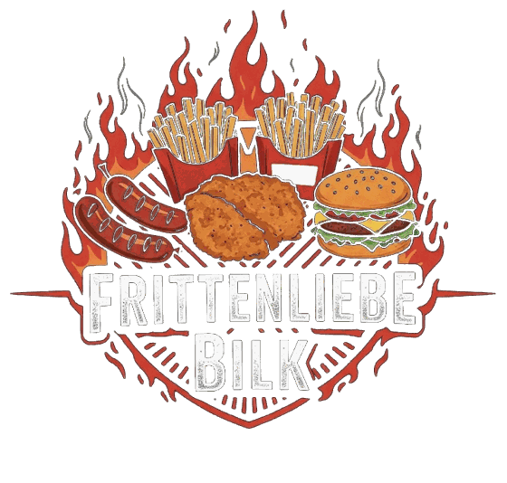
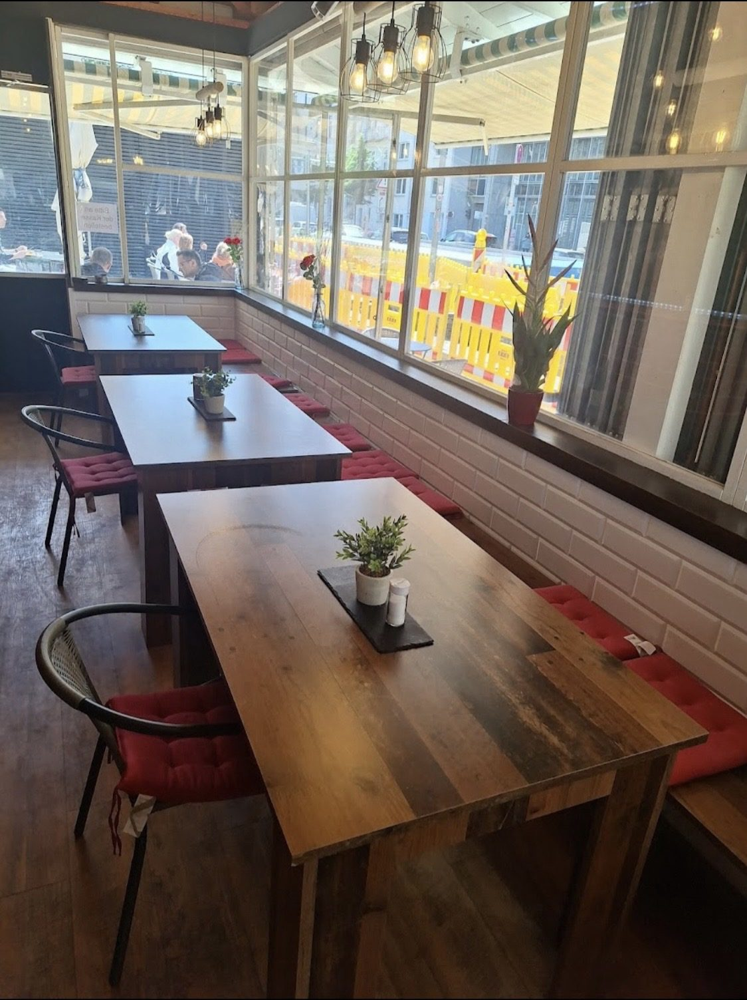

Über uns
Wer hinter dem Tresen am Kirchplatz steht und worauf wir jeden Tag achten.


Über uns
Der Imbiss am Kirchplatz, geführt mit Herz
Frittenliebe Bilk liegt direkt am Kirchplatz, gleich neben der U-Bahn-Haltestelle D-Kirchplatz — mittendrin statt am Rand. Drinnen warten Holztische, rote Sitzkissen und eine große Fensterfront mit Blick aufs Treiben am Platz. Gäste schätzen vor allem eines: die Inhaber sind selbst am Tresen, kennen ihre Stammgäste und nehmen sich Zeit für jede Bestellung, auch wenn es mittags schnell gehen muss.
Ob klassische Currywurst mit Pommes, ein Schnitzel Wiener Art oder ein Burger nach Wunsch belegt: Gekocht wird mit Sorgfalt, nicht auf Masse. Wer vegan oder vegetarisch unterwegs ist, findet hier eine Auswahl, die über die übliche Beilagen-Rolle hinausgeht.
Was Gäste sagenWas uns wichtig ist
Vier Dinge, auf die wir Wert legen
Frisch zubereitet
Nichts kommt vorgekocht aus der Mikrowelle — Pommes, Saucen und Beilagen entstehen direkt am Kirchplatz.
Ehrliche Portionen
Gäste heben in Bewertungen immer wieder die großzügigen Portionen hervor — Sparen an der Menge ist hier kein Thema.
Schnell auf die Hand
Ob Mittagspause oder schneller Snack zwischendurch: bestellt, bezahlt, gegessen — ohne langes Warten.
Freundlich am Tresen
Die Inhaber stehen selbst am Tresen und nehmen sich Zeit für jede Bestellung — auch wenn es voll ist.